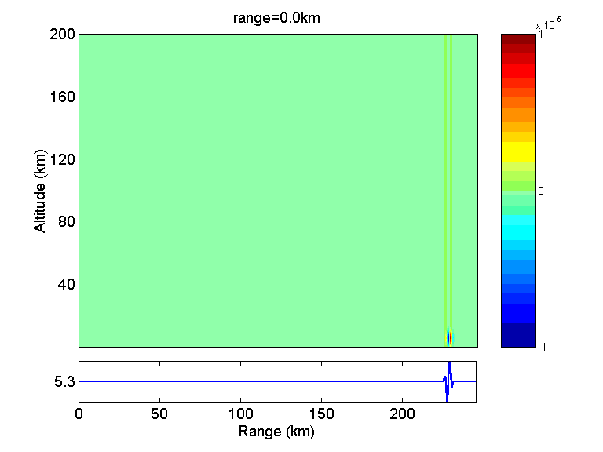
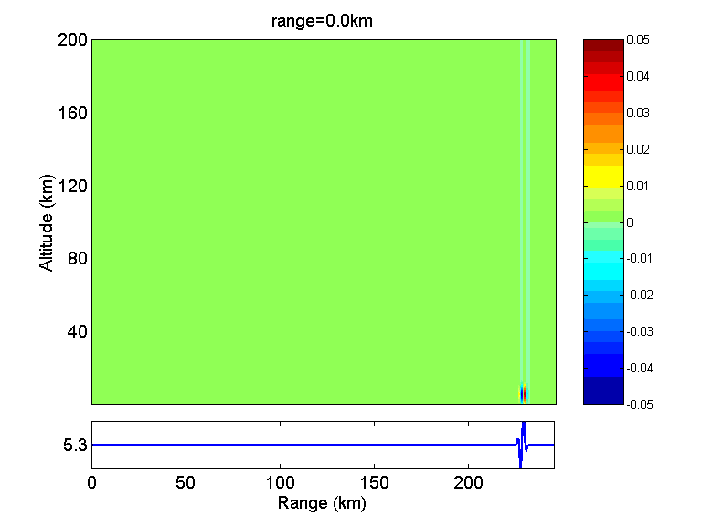

In this example, a realistic range-independent sound speed profile of the atmosphere is used. The field is initialized at 5km altitude. We compare the pulse propagation over a 1000km range.
Dans cet exemple, un profil réaliste de célérité du son indépendant de la distance est utilisé. Le champ est initialisé à 5 km d'altitude. Nous comparons la propagation de l'impulsion sur une distance de 1000 km.

Fig. 8.a: Linear acoustic propagation Fig. 8.a : Propagation acoustique linéaire

Fig. 8.b: Nonlinear acoustic propagation Fig. 8.b : Propagation acoustique non-linéaire